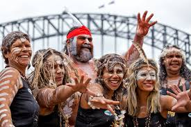

Explore the Land Down Under
Australia is the unexpected: a place where the world's oldest cultures share vast ochre plains,
stylish laneways and unimaginably blue waters with successive waves of new arrivals from across the globe.
Known for its stunning landscapes and unique wildlife, Australia offers a diverse range
of experiences for travelers. All of which will be shown below


Australia boasts a rich cultural heritage influenced by Indigenous traditions and multiculturalism.
The laid-back lifestyle, outdoor activities, and vibrant arts scene make it a unique destination.
There is a strong culture of friendliness and community, with Australians known for their hospitality and love for sports.
It won't take long for you to feel at home in Australia!
Culture and Lifestyle